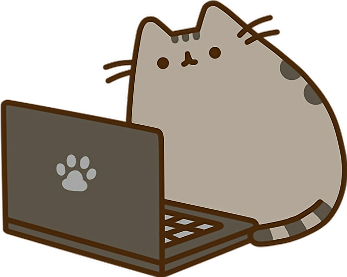

NBA ODDS ANALYSIS
Data science project that models NBA game probabilities and compares them against bookmaker odds to identify market inefficiencies.

DEVELOPER PORTFOLIO OS
I’m Joel, an electronics engineering student,
building websites & web applications
and learning data science & machine learning,
interested in cybersecurity & game dev as well.
At the moment, my goal is simple: keep learning, keep building projects, and explore different fields within
technology to develop a strong and versatile skill set.